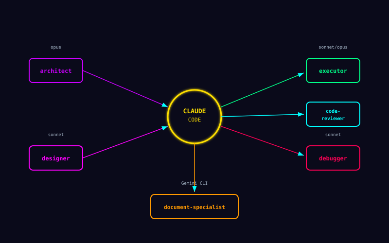

서브 에이전트가 강한 이유
한 모델에 모든 맥락을 몰아넣지 않고, 독립적인 일을 역할별로 분리해서 동시에 돌릴 수 있습니다.
- 설계, 구현, 디버깅, 리뷰를 역할별로 분리할 수 있습니다.
- 서로 독립적인 일은 동시에 진행하는 편이 더 빠릅니다.
독립 작업을 병렬로 돌릴 수 있다는 점이 긴 프로젝트에서 결정적입니다.

한 모델에 모든 맥락을 몰아넣지 않고, 독립적인 일을 역할별로 분리해서 동시에 돌릴 수 있습니다.